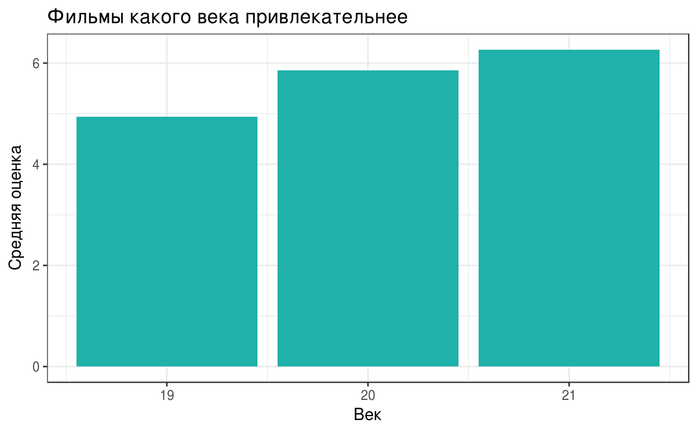
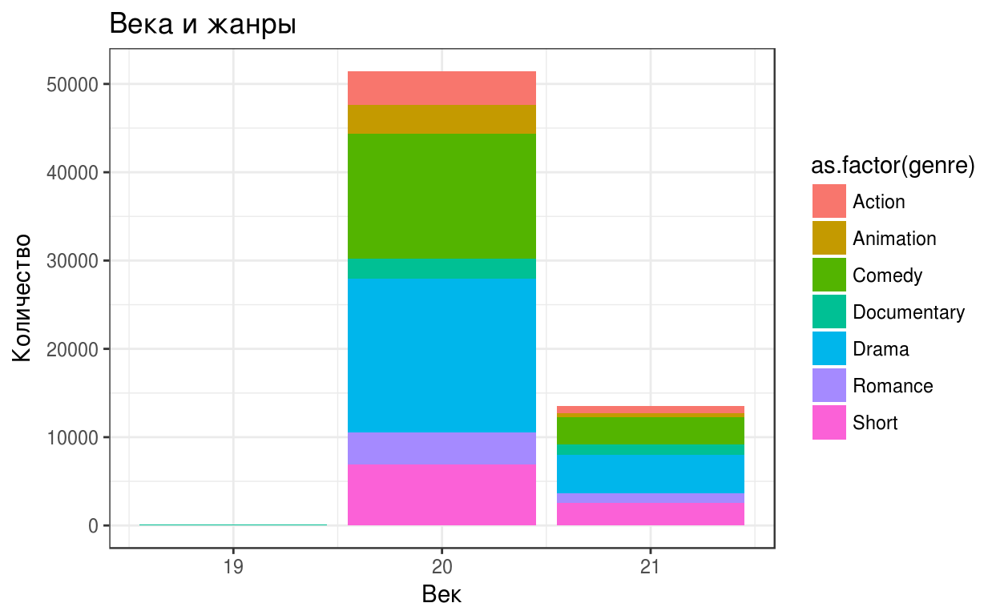

tidyr packagelibrary(tidyr)
library(dplyr)Помимо пакета dplyr, для преобразования данных также может использоваться пакет tidyr, который тем не менее служит несколько другим целям.
tidyr содержит в себе 4 основных функции для работы с датасетами:
gather() - собирает несколько столбцов в 2 по принципу key-value, делая широкий и короткий датасет узким и длиннымspread() - работает в обратную сторону от gather(): разбивает 2 колонки key-value на несколько колонок, делая из длинного датасета широкийunite() - объединяет несколько колонок в однуseparate() - разбивает одну колонку на несколько по заданному разделителюЭти функции более наглядно можно посмотреть в шпаргалке R Studio
Иногда бывает так, что какая-то переменная в датасете разбита на несколько колонок. Как, например, вот в следующей базе с фильмами (?ggplot2movies::movies)
library(ggplot2movies)
data(movies)
head(movies, 5) Сейчас принадлежность фильма к конкретному жанру определяется отдельным столбцом (например, Animation или Drama). Для удобства переделаем датасет так, чтобы вместо 7 столбцов с жанрами осталось два - в одном название жанра, во втором - 0 (относится к этому жанру) или 1 (не относится). Это можно сделать с помощью функции gather().
В общем виде она выглядит так:
gather(data, key, value, ...)Более подробно можно посмотреть в справке ?gather
moviesLong <- gather(movies,
key = genre,
value = isGenre,
Action:Short)
head(moviesLong, 5) В результате, мы получили из “широкого” датасета “длинный”. Новые колонки можно обнаружить в конце таблицы.
title),количеством голосов (votes), рейтингом МРАА (mpaa), оценкой (rating) и жанрами.movies1 <- movies %>% select(...) %>%
filter(...)"Не забывайте про оператор `:` при выборе жанров"movies1 <- movies %>% select(title,votes,mpaa,rating, Action:Short) %>%
filter(votes > 200, mpaa!="")test_1 <- find_call("select()", "you didn's use select()")
test_2 <- find_names("movies", "you didn't use `movies` dataset")
test_3 <- find_names("title", "select `title` variable")
test_4 <- find_names("votes", "select `votes` variable")
test_5 <- find_names("mpaa", "select `mpaa` variable")
test_6 <- find_names("rating", "select `ratings` variable")
test_7 <- find_names("Action", "select `Action` variable")
test_8 <- find_names("Short", "select `Short` variable")
test_9 <- find_call("filter()", "you didn't use filter()")
test_10 <- check_argument("votes > grab_this", match_number(200), "you didn't filter movies with less or equal to 200 votes")
test_11 <- find_statement('!=', "")
test_12 <- find_statement('mpaa!=""', "you didn't filter movies with less or equal to 200 votes")
USER_CODE %>% test_1 %>% test_2 %>% test_3 %>% test_4 %>% test_5 %>% test_6 %>% test_7 %>% test_8 %>% test_9 %>% test_10 %>% test_11 %>% test_122.Сделайте из колонок с жанрами одну колонку и вторую - с принадлежностью к жанру. (используйте gather) ```
moviesLong1 <- gather(movies1, key = genre, value = isGenre, Action:Short)moviesLong1 <- gather(movies1, key = genre, value = isGenre, Action:Short)library(ggplot2)
moviesLong2 <- moviesLong1 %>% filter(isGenre == "1")
ggplot() +
geom_boxplot(data = moviesLong2, aes(x = genre, y = rating)) + xlab("Жанр") + ylab("Оценки") + ggtitle("Распределение оценок по жанрам") + theme_bw() Бывает и такое, что надо преобразовать “длинный” датасет в “широкий”. В таком случае используется функция spread. Общий её вид:
## Error: Key column 'key' does not exist in input.Поподробнее можно посмотреть в справке ?spread
Для наглядного представления, вернем получившийся выше “длинный” датасет в “широкий”.
moviesWide <- spread(moviesLong, key = genre, value = isGenre)## Error in match(x, table, nomatch = 0L): object 'moviesLong' not foundView(moviesWide)## Error in as.data.frame(x): object 'moviesWide' not found1.Оставьте только фильмы, которым поставили оценку более 100 раз и у которых есть рейтинг МРАА, а также уберите колонки r1-r10.
moviesWide1 <- moviesWide %>% select(-(r1:r10)) %>%
filter(votes > 100, mpaa!="")## Error in eval(expr, envir, enclos): object 'moviesWide' not found2.Преобразуйте датасет так, чтобы развернуть переменную возрастного рейтинга (mpaa) с указанием числа поставивших оценку (votes). Упорядочите данные по году.
moviesWide2 <- spread(moviesWide1, key = mpaa, value = votes)## Error in match(x, table, nomatch = 0L): object 'moviesWide1' not foundmoviesWide2 <- arrange(moviesWide2, year)## Error in arrange(moviesWide2, year): object 'moviesWide2' not foundС помощью пакета tidyr можно также объединять несколько колонок в одну. К примеру, объединим вместе колонки year и length.
movies_United <- movies %>%
unite(yl, year, length)
View(moviesUnited)## Error in as.data.frame(x): object 'moviesUnited' not foundИтак, теперь у нас появилась новая колонка yl. По умолчанию, функция unite объединяет значения в колонках через ““, однако можно также установить свой разделитель. Изменим”” на “-”, что можно сделать с помощью аргумента sep.
movies_United <- movies %>%
unite(yl, year, length, sep = "-")
View(moviesUnited)## Error in as.data.frame(x): object 'moviesUnited' not foundИли можно объединить колонки так, чтобы между значениями не было разделителя.
moviesUnited <- movies %>%
unite(yl, year, length, sep = "")
View(moviesUnited)## Warning in View(moviesUnited): unable to open display## Error in .External2(C_dataviewer, x, title): unable to start data viewerОднако смысла в этой колонке нет, поэтому вернем все на свои места, разъединив эту колонку на изначальные. Этто можно сделать с помощью функции separate. По умолчанию, separate разделяет колонку по первому встреченному не-цифровому или не-алфавитному знаку, однако с помощью аргумента sep можно также задать свой разделитель.
movies <- movies_United %>% separate(yl, into = c("year","length"))
# movies <- movies_United %>% separate(yl, into = c("year","length"), sep = "-") - то же самое
View(movies)## Warning in View(movies): unable to open display## Error in .External2(C_dataviewer, x, title): unable to start data viewerС помощью аргумента sep можно также разделить колонку по нужному количеству знаков. Например, вернем тот вариант, где колонка соединенена без разделителя, в исходный вариант. Стоит также принять во внимание то факт, что после соединения колонок тип переменной поменялся с numeric на character. Это можно исправить с помощью аргумента convert, который конвертирует переменную в подходящий формат.
movies <- moviesUnited %>% separate(yl, into = c("year","length"), sep = 4, convert = T)
View(movies)## Warning in View(movies): unable to open display## Error in .External2(C_dataviewer, x, title): unable to start data viewermovies_new <- movies %>% separate(year, into = c("century","year"), sep = 2, convert = T)
movies_new$century = movies_new$century +1m = movies_new %>% group_by(century) %>% summarise(mean_r = mean(rating))
ggplot()+
geom_bar(data = m, aes(x = century, y = mean_r), stat = "identity", fill = "#20B2AA")+
xlab("Век") +
ylab("Средняя оценка") +
ggtitle("Фильмы какого века привлекательнее") +
theme_bw()
3.Снова соберите жанры в 2 столбца, оставьте только фильмы с принадлежностью к жанру. Нарисуйте график, показывающий, фильмы каких жанров снимались по векам.
movies_long <- gather(movies_new, key = genre, value = isGenre, Action:Short) %>%
filter(isGenre == "1")
ggplot()+
geom_bar(data = movies_long, aes(x = century, fill = as.factor(genre)))+
xlab("Век") +
ylab("Количество") +
ggtitle("Века и жанры") +
theme_bw()